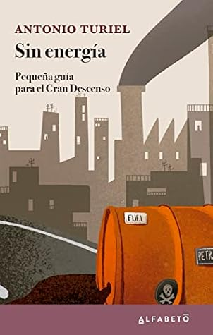

Sin energía: Pequeña guía para el Gran Descenso
Reseña por Jorge I. Zuluaga

Ver reseña en GoodReads (necesita cuenta)
Disfrute de este pequeño ensayo tanto como disfrute de Petrocalipsis, muy a pesar de que mis propias ideas sobre el problema de la energía, que yo creía bien informadas, eran bastante diferentes. Esta es una de las mejores características de los libros de Turiel. A pesar de basarse en ciencia sólida y en datos disponibles para todos, Turiel logra poner los énfasis en lugares distintos y hacernos ver otras realidades que nos pasan desapercibidas en el clima de “optimismo verde/renovable” del que sufrimos muchos.
Como seguramente leyeron en la descripción del libro, en esta colección de ensayos el profesor Turiel nos ilustra la dinámica que tienen y tendrán el descenso en la producción y uso de los recursos energéticos de los que depende nuestra especie, en especial, los combustibles fósiles. Turiel nos pone en contacto con conceptos muy interesantes, y para mi novedosos, como el de “economía fuera del equilibrio” (el término es mío y tal vez no sea adecuado), con mercados ineficientes y una futura desigualdad rampante en el acceso a esos recursos; o aquel del colonialismo energético, en el que sedientas potencias extranjeras extraen los recursos energéticos de países más “pobres” dejando en ellos el efecto de los impactos económicas negativos.
Como siempre —y como leemos en otros de sus ensayos y publicaciones en redes sociales— Turiel es un crítico ácido de las “soluciones verdes”, incluyendo las relacionadas con la energía nuclear y el Hidrógeno verde, que para muchos, incluyéndome, parecen los únicos caminos razonables para evitar la carbonización de la atmósfera. Sus argumentos son, sin embargo, bastante convincentes y nos permiten, a los optimistas, ver el problema con más matices y una buena dosis de realismo.
El último capítulo me encantó. Es el más optimista —aunque no es por eso que me ha gustado tanto— y en el plantea las posibles salidas a muchos de los problemas que diagnostica en el resto del ensayo. Con las ideas que reproduce en ese capítulo, el profesor Turiel consigue, al menos para mi, desmarcarse de la idea de que quienes como él asumen una posición muy crítica o más bien realista a las aparentes soluciones “mágicas” al problema de la energía, son simplemente unos cascarrabias catastrofistas.
Me quedo con una palabra: decrecimiento.
Solo lamento de este libro su extensión. Son solo 100 páginas de las cuales casi 15 son para página en blanco y títulos aislados de los capítulos del ensayo. Este tipo de trucos editoriales para engrosar un libro de modo que se venda mejor no me gustan para nada. Me encantaría leer un análisis de Antonio sobre las realidades e ineficiencias del mundo editorial que se revelan en este tipo de publicaciones.
¡Lean a Turiel! Péguense de vez en cuando un frío baño de realidad.